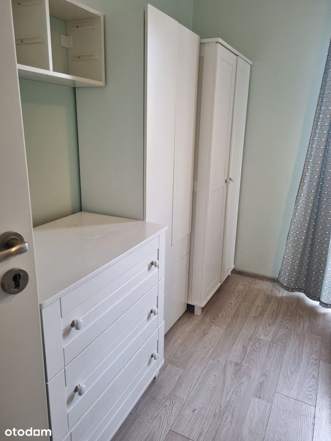
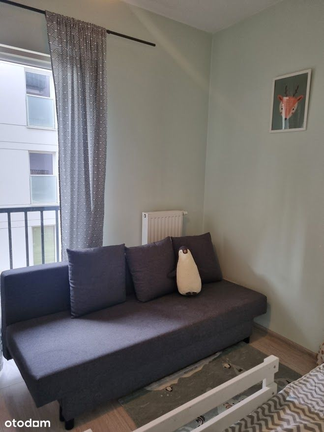
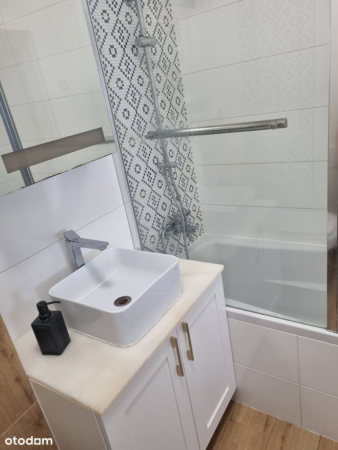
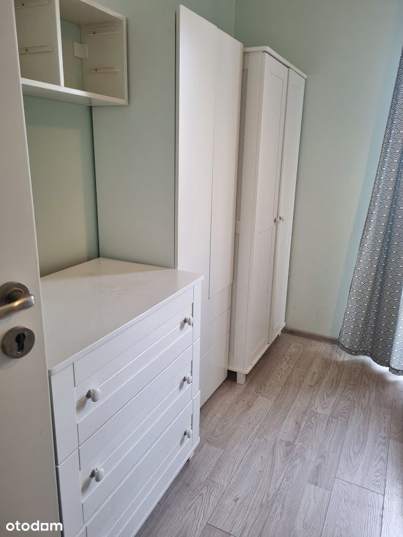
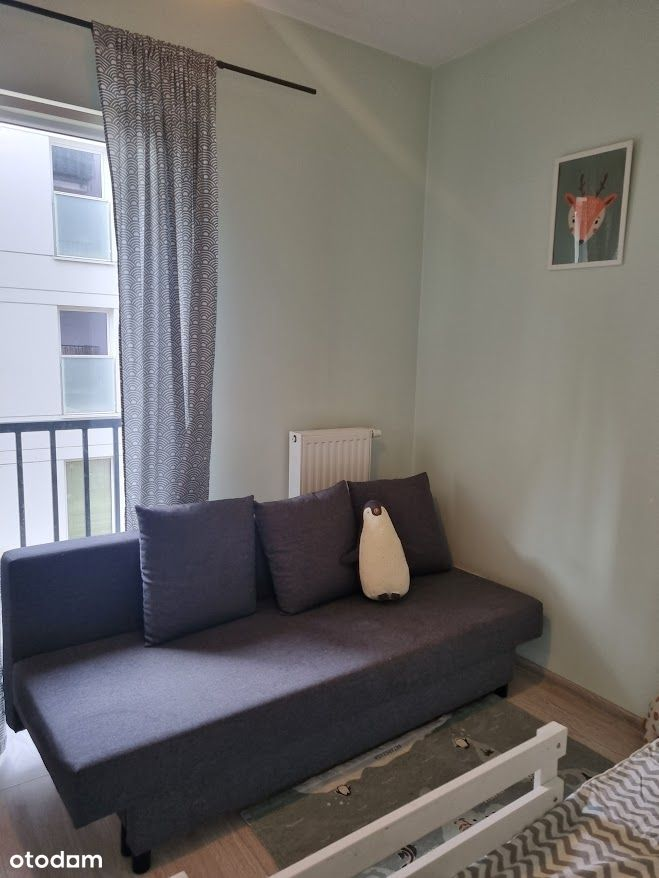
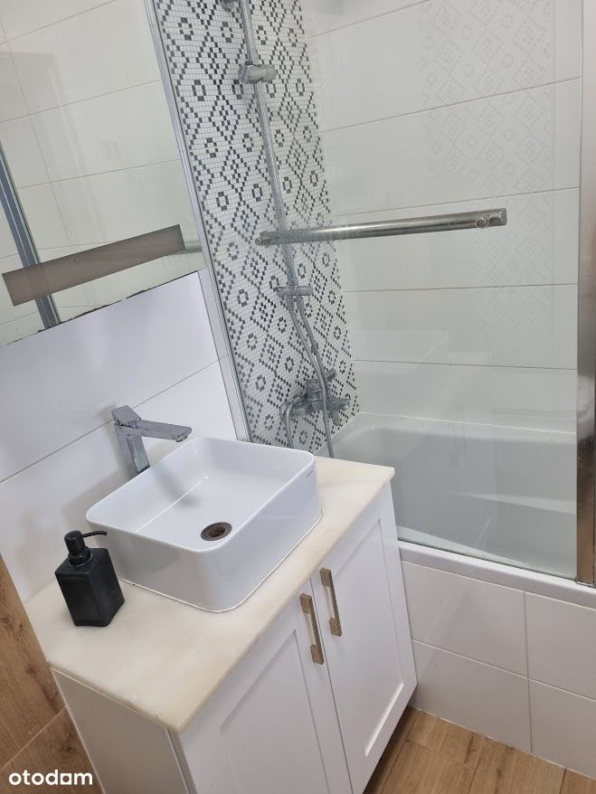

Sprzedaż bezpośrednia!
Mieszkanie przy ul. Ponarskiej w Warszawie
Lokalizacja
Mieszkanie znajduje się w dzielnicy Targówek w Warszawie, na osiedlu Wilno, które charakteryzuje się doskonałą lokalizacją i wygodnymi połączeniami komunikacyjnymi:
Otoczenie
W okolicy znajduje się szeroki wybór sklepów i usług, które ułatwiają codzienne życie mieszkańców. W pobliżu są także liczne szkoły, przedszkola, apteki, restauracje, poczta i przychodnie. Miłośnicy spędzania czasu na świeżym powietrzu docenią bliskość terenów zielonych, takich jak Zalew Bardowskiego.
Budynek
Mieszkanie położone jest na pierwszym piętrze w kameralnej inwestycji Villa Neptun II z 2018 roku, która harmonijnie wpisuje się w rodzinny charakter okolicy. Osiedle cechuje niska zabudowa, a przestrzeń wspólną wypełniają ulice, place miejskie, skwery, alejki oraz fontanny.
Mieszkanie
Mieszkanie o łącznej powierzchni 60,05 m² składa się z:
-salonu z aneksem kuchennym,
- bardzo dużej sypialni,
- dodatkowego pokoju,
- przedpokoju,
łazienki oraz balkonu o powierzchni 6,14 m².
Lokal jest dobrze doświetlony dzięki południowo-zachodniej ekspozycji, co sprawia, że wnętrze jest jasne i przestronne.
Mieszkanie zostało odświeżone w lipcu, co umożliwia natychmiastowe zamieszkanie.
Dodatkowo, do mieszkania przynależy miejsce postojowe w garażu podziemnym oraz komórka lokatorska (dostępne za dodatkową opłatą).
Super sąsiedztwo.
Możliwa negocjacja ceny.
Zapraszamy do kontaktu!

 
